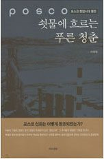

저자 이대환출판사 아시아연재일 2006년 5월 20일

책소개
세계 일류 철강회사로 우뚝 솟은 포스코 신화의 숨겨진 땀과 노력의 이야기. 이 책은 종합제철 건설과 조업에 반드시 필요한 자본과 기술과 경험이 전무한 상태에서 오로지 '제철보국(製鐵報國)'의 사명으로 영일만 모래밭에 철강신화를 만들어낸 포스코인들의 생생한 이야기를 담았다.
특히 1부 '포스코의 초석이 된 사람들'에서는 포스코 창업 주역들의 이야기를 1인칭 서술로, 2부 '제철보국, 오늘이 있기까지'에서는 그 동안 있었던 다양한 사건들을 3인칭 시점으로 서술하여 실감나게 그들의 애환, 열정, 지략, 기지를 느낄 수 있다.
저자소개
저자 : 이대환 李大煥
현재 포항에 살고 있는 지은이 이대환은 이 책 ‘작가의 말’에서 이렇게 말하고 있다. 이 말에서 포스코와의 개인적 인연을 짐작할 수 있다.
“포항제철이 들어선 영일만 모래동네에서 태어나 자라난 나는 1968년 가을에 이주한 뒤로도 여태껏 유년의 공간에서 불과 몇 리 떨어져 살고 있다. 참으로 오랜 이 정박은 돌아다니는 체질과 아주 딴판으로 삶의 뿌리만은 마치 제철설비를 떠받치는 땅속의 파일처럼 고향에 박아둔 격인데, 포항에서 마음 맞는 이와 어울리거나 멀리서 귀한 이가 찾아오면 단골로 찾아가 앉는 자리가 있다. 영일만 바닷가 생선회 식당 이층의 난간 같은 거기서는 밤의 제철소가 한눈에 보인다. 어둠이 번지는 즈음에 어김없이 거대한 설비들이 불야성의 도시로 변모되고, 어느 새 잔잔한 앞바다 속에는 지상의 숱한 불빛이 온갖 빛의 기둥으로 둔갑한다. 찬란하게 아름답다. 그러나 그것은 쇳물을 얻는 투쟁의 노정에 바쳐온 수많은 사람들의 잠들지 않는 눈빛이 어우러진 야경이다. 영광은 그이들의 것이건만, 술잔은 후세가 기울인다.”
1958년 포항 출생
1980년 PEN클럽 한국본부 주관 장편소설 현상 공모에 당선
1989년 <<현대문학>> 지령 400호 기념 장편소설 공모에 당선
현재 (사)포항지역사회연구소 소장, (사)민족문학작가회의 경북지회장
저서로 장편소설 『새벽, 동틀 녘』,『겨울의 집』, 『슬로우 불릿』, 『붉은 고래』,
소설집 『조그만 깃발 하나』, 『생선 창자 속으로 들어간 詩』, 평전 『박태준』 등이 있다.
목차
1부 포스코의 초석이 된 사람들
고준식_신화의 안살림을 온몸으로 맡다
황경로_'장부'를 없애고 '코드'로 관리하라
안병화_조업 첫해에 흑자를 이룬 땀방울
정명식_토목공학도, 포스코에서 꽃피우다
백덕현_우리 손으로 '제철소의 DNA' 설계
장경환_내 인생의 영원한 자부심
노중열_차관도입의 뒤안길에서
박종태_롬멜하우스와 곰솔
홍건유_토박이들의 집 허물며 성공 다짐
여상환_'여의 날' 기념패가 내게 준 의미
최주선_닉슨 쇼크와 오일 쇼크
김창기_감사 노릇 할 게 없어
이상수_긴장된 분위기 푸는 '농담 담당'
권태협_태풍 속 석탄 퍼내며 새운 밤
안덕주_레이아웃에 미래지향을 담다
이원희_고진감래의 수업
박준민_좀 줄인 고로와 '저거'
김철우_고국 발전 위해 이 땅을 딛고
김인택_통금 30분 전에 협상 실마리
한경식_고로와 더불어 살다
연봉학_기술의 길이 아무리 멀지라도
2부 '제철보국' 오늘이 있기까지
포스코 창립일_거짓말 없는 만우절의 약속
'산업입국' 진군의 나팔_사막전이 남긴 '곰솔 비문'
대통령의 예고 없는 방문_"이거, 남의 집 다 헐어 놓고 제철소가 되기는 되는 건가"
못된 조교 덕분에_고소공포 없애려 형산강 철교 왕복
무에서 유를 창조한 철의 사나이들_자신도 모르게 고로와 인연 맺어
'고로 잔공사 비상' 선포_황금빛 첫 쇳물에 뜨거운 눈물 흘러
위기일발의 그때 그 시절_'3일 만의 정상조업' 뒤엔 선배들 저력이
마을 마지막 지킨 수녀원 폭파_그러나 사라지지 않는 희망의 불꽃
새 공정관리 기법으로 진땀_황금 주말 빼앗기고 기합 받던 회의시간
헝그리 정신으로 빛난 눈동자_다음 세대에 물려줄 행복을 위한 마이크로필름
투지로 언어장벽 뚫고 배운 해외기술_자립의 힘을 길러 준 귀한 수업료
세계 최고의 그날까지_배우는 '학생'에서 가르치는 '선생'으로
20년 전 점찍은 제2의 창업지_난더후투의 교훈
공존공익의 기본정신을 토대로_양쯔강 하구의 "이!얼!산!"
시장 다각화_제1생활수칙은 '친구를 사귀어라'
세계 철강의 본거지에 휘날린 태극기_원숙한 영혼을 목탁처럼 울리는 푸른 결심
노사 화합의 실마리를 찾다_"이제야 포스코의 진실을 믿겠습니다"
우리가 한국 경제의 새 동력_'세계 자원이 우리 것'이라는 정신으로 뛰다
영일말 사내들의 '쇳물' 염원 담아_쇳물보다 먼저 '쇳물' 나오다
한마음 한뜻으로_'번영 위해 바친 추석, 조상인들 탓할쏘냐'
"무조건 하루에 700M³씩 콘크리트 타설하라"_포항지역 하천 불야성
20톤짜리 크레인으로 들어올린 대들보_"책임을 무서워 말고 우리 손으로 해봅시다"
1988년 가을의 행복_서울 올림픽 때 IISI총회 유치 '겹경사'
북간도와 대송제철소_사표를 태워 올린 봉수대 승전 신호
그때 수녀원이 있었네_사랑의 터전에 조국 근대화 열정 꽃피다
배고픔을 채워 주던 중국식당, 성화장_언제나 친절했던 '포철 신사들' 못 잊어